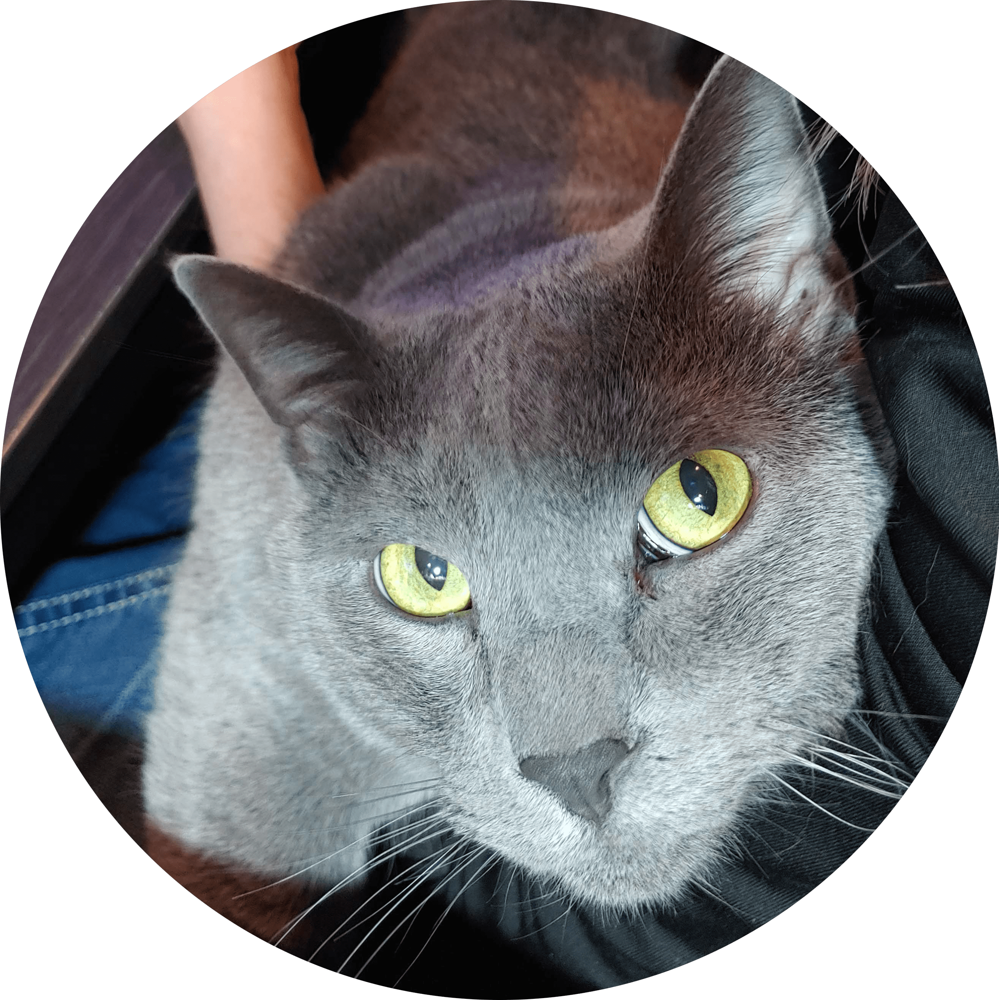

|  | Suzanne's Thoughts on LifeWriter, Researcher, Social Sustainability Life Coach, Artist, Musician, Astrologer, Shadow Speaker, Aspiring Programmer, Full Stack Web Developer, Cybersecuritista, and Ethical Hacker I have Asperger's (aka ASD or High Functioning Autism (HFA)). I'm a writer, researcher, artist and musician. I've spent over 16 years studying human behavior, social issues, personal development, trauma and abuse, spiritual beliefs, and much much more. My research is from a scholarly perspective, however I use what I've learned in my personal philosphies, life coaching, and within the bodies of my other works. I'm passionate about helping others develop more emotional intelligence, nonviolent communication, and relational leadership skills through the practice of building up self love, self belief, self expression, and healing the shadow. This website is what one might call the sketches and notes, or, the backend of my life perhaps. |
| Dates | Work |
|---|---|
| 2017 - 2019 | Website and Digital Marketing |
| 2015 - 2016 | Freelance |
| 2011 - 2015 | Studied at Metropolitan State University of Denver |
| 2000 - 2009 | Billing Contracts Specialist |
| Social Sustainability | ⭐️⭐️⭐️⭐️⭐️ | Wordpress | ⭐️⭐️⭐️ | Python | ⭐️ |
| Writing | ⭐️⭐️⭐️⭐️ | Proofreading | ⭐️⭐️⭐️⭐️ | Web Development | ⭐️⭐️ |
| Git/Github | ⭐️⭐️⭐️ | Web Maintenance | ⭐️⭐️⭐️ | ||
| Website Migrations | ⭐️⭐️⭐️ | Research | ⭐️⭐️⭐️⭐️ |
Click here for the full page.